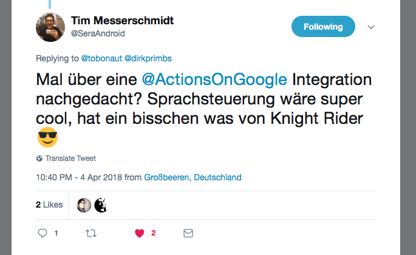
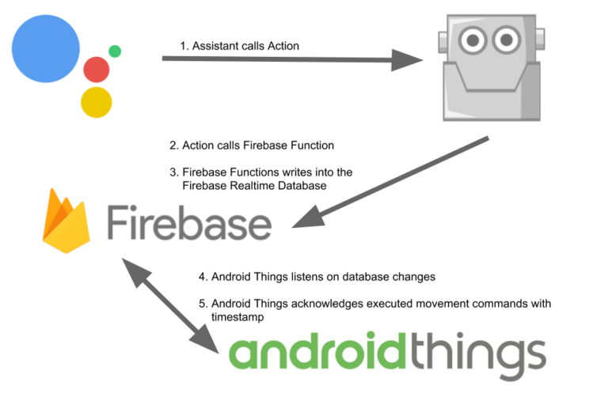

Mit Google Assistant & Firebase die Fahrtrichtung von ToboT via Stimme steuern
Wieso? Weshalb Warum?
Darum.
ToboT ist und bleibt mein Wochenende-Projekt was absolut nichts mit meinem sonstigen Entwicklerleben zu tun hat. Ein auf Android Things und Raspberry Pi basierendes Vehicle. Dafür kein iOS, keine Deadlines, einfach der Spaß an der Freude an moderner Technik.
Das ich mich jetzt aber wirklich einmal mit dem Thema der “Sprachsteuerung” beziehungsweise der Funktionsweiße des Google Assistant gewidmet habe, nach dem ich von der Erstellung von Skills für Alexa recht enttäuscht wurde, ist Tim Messerschmidt von Google Deutschland geschuldet.
Als ich mit stolzer Brust den damaligen Stand von Tobot mit Mr. Flutter auf Twitter teilt, gab er den Hinweiß doch mal was mit Actions on Google (Assistant) zu machen. Ich fand die Idee eines “DIY Knight Rider” Autos sehr amüsant. Somit verbrachte ich den Tag der Arbeit mit Spaß(-Arbeit).

Das Schöne ist, dass dieses Projekt zwar niemals Produktivstatus was Security, Fehlersicherheit und die Eleganz des Quelltextes anbelangt, es aber wirklich mit einer meiner Lieblingsdinge ist, welche ich jemals selbst für mich geschrieben habe. Hach, IT – wie schön ist es mit dir.
Übersicht des Techstacks
Der Techstack beruht diesmal maßgeblich und absichtlich nur auf Produkten von Google. Google Assistant zur Benutzerinteraktion, Google Firebase Function und Realtime Database zum Datenhandling und Google Android Things als Exekutive auf dem Raspberry Pi.

Google Assistant
Die Konfiguration meiner Action war relativ schnell gemacht. Das Wording wie “Intents” oder “Entity” in diesem Kontext kamen mir aus meiner CEP-Vorlesung an der Universität bekannt vor als auch, dass es unendlich viele Ressourcen auf der Produktseite von developer.google.com gibt.
Hierbei stellte ich fest, dass wenn man “nur” experimentieren möchte, man eventuell noch nicht die API v2 nutzen sollte. Hierfür wurden etliche Tutorials noch nicht angepasst. Für mein Rumgespiele habe ich da jetzt aber auch keinerlei Nachteile gesehen – wie gesagt, das Projekt hat keinerlei Ambitionen “produktiv” zu sein.


Firebase Function
Als Fulfillment Target bei meiner Action habe ich eine simple Firebase Function angegeben. Diese nimmt das auf sie geworfene JSON erst auseinander um schlussendlich die gewonnen Informationen in ein Firebase Database INSERT Statement verwandelt. Die Javascript Funktion ist kein Hexenwerk und wurde jetzt auch nicht von mir erfunden sondern aus verschiedenen Tutorials zusammen ge-frankenstein-ed.
Hätte mir da bisschen mehr integrierte Logik ala “ich gebe dir das Objekt mit ID nach einem INSERT zurück” gewünscht. Eventuell hab ich es aber auch einfach nicht richtig verstanden. Alles ist möglich. Node.js und ich werden einfach keine Freunde.
Firebase Database
Als Mittelsmann zwischen dem Devices der Aussenwelt und meinem ToboT Vehicle nutze ich immer noch die Real Time Database von Firebase.
Das Prozedere ist wirklich einfach erklärt. Ich füge neue Einträge über die Firebase Function oder andere Requester in die Datenbank hinzu, das Vehicle hört aktiv auf Changes in genau dieser Datenbank und führt diese aus. Falls alles klappt bewegt sich das Gefährt in die gewünschte Richtung.
Ich wiederhole mich, dies würde man niemals in einer Produktionsumgebung machen. Beim Spaß haben ist (fast) alles erlaubt.
Picture or it didn’t happen
Ein Video sagt mehr als tausend Worte. Muss zugeben, als Person mit einem zeitweißen Sprachfehler sind solche Videos doch immer wieder eine starke Überwindung. Im Nachhinein ist man dennoch froh und stolz darauf. Wie hier im YouTube Video zu sehen ist.
Was kommt noch?
Mal sehen.
Auf jedenfalls Github Readme aktualisieren mit allen neuen was nun möglich ist. Eine Flutter Compagnien App wäre für mich persönlich wohl am naheliegensten. Falls ich vermehrt Lust auf Java und Android habe eventuell auch eine Anbindung an einen Bluetooth Controller einer gängigen Konsole. Mal sehen.
Warten wir aber mal noch die Google I/O 208 ab – eventuell kommt da ja noch was viel tolleres was man an den ToBot anflanschen kann.
Zurück